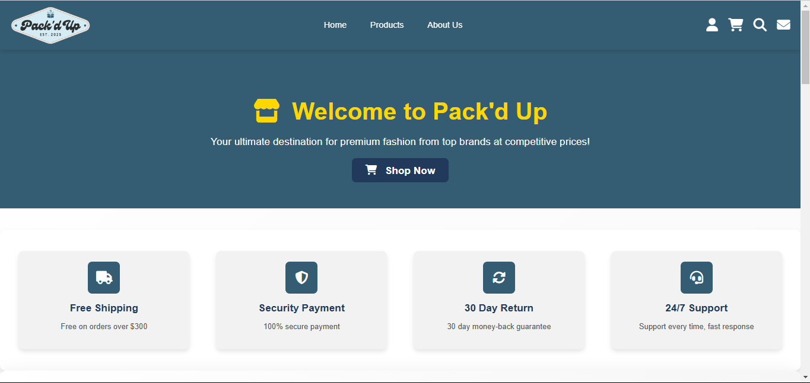
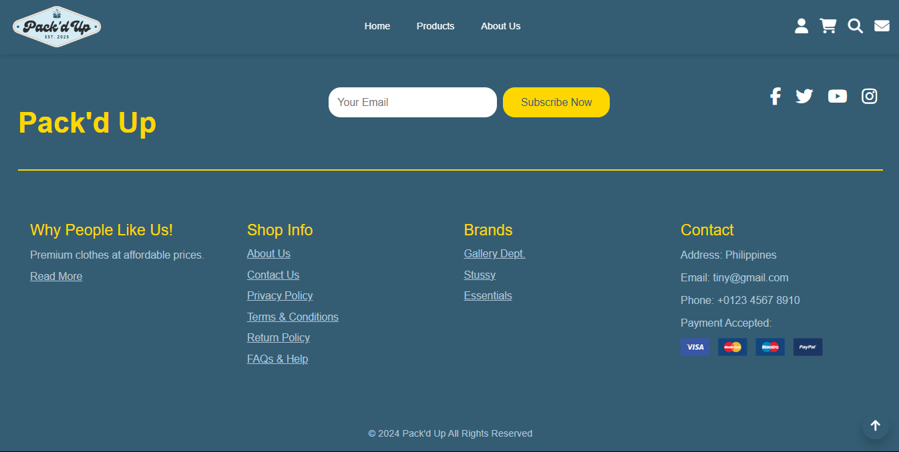
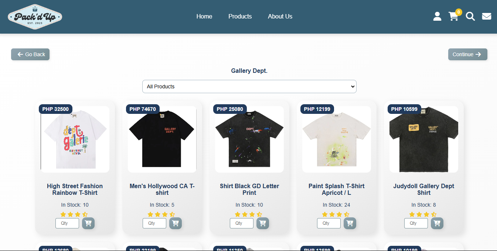
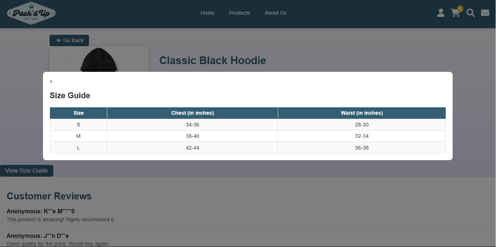
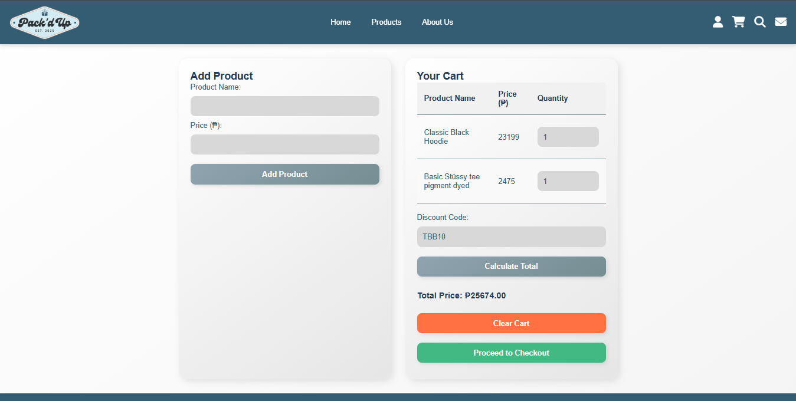

Pack’d
Up.
A responsive streetwear e-commerce concept focused on clean product presentation, simple navigation, and a consistent visual identity.
From a visual concept to a responsive storefront.
Pack’d Up was created as an e-commerce web project. I explored the visual identity, product presentation, navigation, and responsive layouts before translating the concept into a working front-end experience.
The goal was to keep the shopping journey straightforward while giving the products enough visual space to stand out.






Defined the look and feel of the e-commerce interface and product presentation.
Designed layouts that adapt across screen sizes and maintain visual hierarchy.
Translated the design into HTML, Tailwind CSS, and JavaScript.
Added navigation and interface interactions to support a smoother browsing experience.